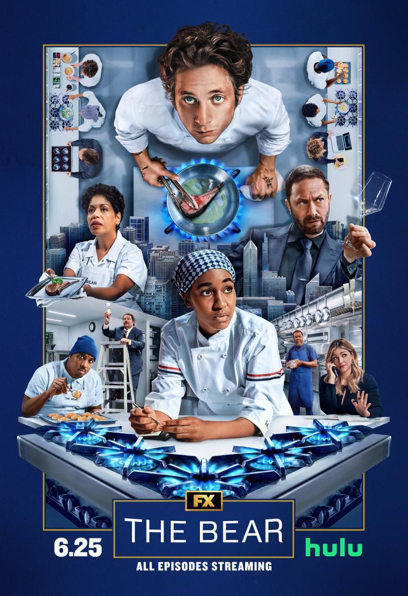

Carmy intenta transformar "The Original Beef of Chicagoland" aplicando estándares
de alta cocina, lo que genera un choque cultural inmediato con el personal veterano.
Con el que mas choque sufre es con Richie, el mejor amigo de Michael, quien se resiste a cualquier cambio

Tras un caos total durante una noche de servicio (donde Sydney se va temporalmente),
descubren que Michael escondía dinero en latas de tomate, cubriendo las deudas.
Carmy decide cerrar "The Original Beef" para abrir un nuevo restaurante, más profesional,
llamado "The Bear"
